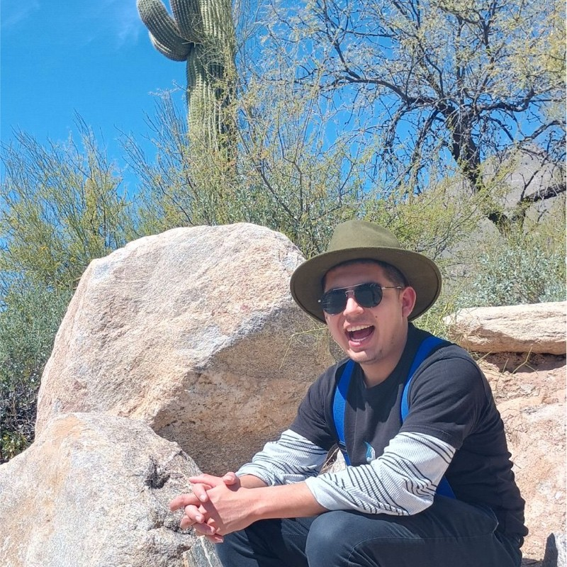

About
My name is Acamaro Cutcher and I am study Computer Science, Math and Physics. I was borned and raised in Ecuador near the Amazon Rain Forest. I started to really enjoy learning about Physics during my highschool years. So I decided to major in Physics. However, as I learned more and more, I understood that solid understand of mathematics is very important. Henceforth, I decided to study mathematics aswell and just minor in Physics. I enjooy to run and to bike around Portland Oregon. I hope to be able to learn and grow more as I continue my education here.